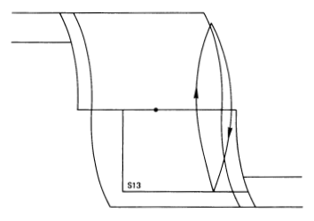

SIMPLIFIED MODEL OF THE SPACE SHUTTLE ON-ORBIT FLIGHT CONTROL SYSTEM
Table of Contents
- author: P. Hattis, C. Kirchwey, H. Malchow, D. Sargent, S. Tavan
- address The Charles Stark Draper Laboratory, Inc. 555 Technology Square Cambridge, Massachusetts 02139
- sponsor National Aeronautics and Space Administration Johnson Space Center Houston, Texas 77058
- date July 1982
Annotations by H. Bourbouh, P-L. Garoche and K. Trinh. Oct. 2019
1 FrontMatter
1.1 Abstract
This document defines the simplified version of the space shuttle on-orbit flight control system intended for establishing the interaction of the flight control on the payload and/or payload interface structure during the predeployment or deployment state. These states are defined to occur any time the payload is unlatched from its relatively rigid ascent/entry mounting, but is still connected to the orbiter. This flight control version is called the simplified digital autopilot (SDAP) and includes all rotational control capabilities generally expected during orbital payload operations which include any payload related activity where payload dynamics and orbiter dynamics significantly interact.
The purpose of the SDAP is to generate representative reaction control system (RCS) jet firings during on-orbit operations. The SDAP lends itself to ready implementation in any well constructed flexure simulation with payload and possibly orbiter bending models. Possible outputs of simulation studies include payload loads data and payload/orbiter interactions.
1.2 Preface
This document defines the simplified version of the space shuttle on-orbit flight control system intended for establishing the interaction of the flight control on the payload and/or payload interface structure during the pre-deployment or deployment state. These states are defined to occur any time the payload is unlatched from its relatively rigid ascent/entry mounting, but is still connected to the orbiter. This flight control version is called the simplified digital autopilot (SDAP) and includes all rotational control capabilities generally expected during orbital payload operations which include any payload related activity where payload dynamics and orbiter dynamics significantly interact.
The purpose of the SDAP is to generate representative reaction control system (RCS) jet firings during on-orbit operations. The SDAP lends itself to ready implementation in any well constructed flexure simulation with payload and possibly orbiter bending models. Possible outputs of simulation studies include payload loads data and payload/ orbiter interactions.
Key constraints in developing the SDAP model were that no translation operations would be required during pre-deployment or deployment payload activity and that the most severe failures requiring study would be single jet ON failures of the jet type(s) (primary and vernier) used when operating with a particular payload. Any planned payload operations that could violate these assumptions may require study beyond the scope of this document.
A significant number of quantities which are software design or mission dependent, called I-loads, are required in the SDAP. Sample values, applicable to STS-5, are given in the SDAP model, but reference to the NASA I-load baseline, Space Shuttle Program Orbiter Project Computer Program Development Specification Volume I, Book 9.5 STS Flight Software Initialization Load SS-P-0002-195F will be required to assure that appropriate I-load values are used for a payload on a specific shuttle flight.
The user should be aware that a flight software change may have some affect on the validity of the SDAP model.
While the SDAP is not meant to guarantee the exposure of all payload/orbiter/FCS operational concerns, it is intended to be used as a design tool to aid in resolving broad configurational and operational issues.
2 MainMatter
2.1 Introduction
This report documents a simplified model of the shuttle orbital flight-control system (FCS). The model is designed for construction of shuttle-payload interaction simulations, and it contains sufficient elements of the complete autopilot to provide realistic reaction control system (RCS) jet-firing patterns.
The report defines a simplified digital autopilot (DAP) that contains an automatic maneuver routine to control rotation maneuvers and attitude hold. Manual rotation modes are allowed also. The RCS processor retains state-error computations, phase-plane logic, and rotational vernier and primary jet selection. A state estimator is included to process attitude data, thus assuring that the RCS processor senses errors in a similar manner to the actual flight software. A considerable simplification is attained by eliminating RCS and orbital maneuvering system translational DAP logic Q1.
The report begins with an overview of the simple DAP (SDAP). Then, each logic module is discussed in turn. The discussion includes four elements for each module, namely:
- Purpose.
- Functional Description.
- Recommended Logical Realization.
- Input/Output (I/0) Requirements.
Simplified models of the inertial measurement unit (IMU) (DAP sensory data source) and RCS jets (DAP effectors) complete the FCS model.
The appendices provide supporting material including a discussion of the sources and allowable sizes of SDAP parameters, an overview of the attitude data transfer problem, a discussion of rigid-body SDAP behavior, and some discussion of suggested test cases to verify the SDAP implementation. This report defines the FCS as including the SDAP, the motion sensors (IMU), and the RCS (jet) model. The RCS hardware models are designed for rotation only. The FCS model can be configured as a logical unit in a shuttle/payload simulation as shown in Figure 1.
Figure 1: Shuttle/payload simulation.
Users of the SDAP are cautioned that, at very small rate limits and deadbands, e.g., 0.01 deg/s and 0.01 deg for vernier jets, simulation results using the models presented here may not represent real vehicle behavior because of the model simplifications. [Req.s1.p2.1]
2.2 SDAP Structure
- DAP/Vehicle Relationship
Figure 2 shows the general nature of the DAP/vehicle relationship. The DAP receives information concerning the vehicle attitude from sensors (IMUs), makes decisions about needed changes in state, and requests the exercise of effectors (jets) to bring about a desired state. The conditioning inputs shown in Figure 2 include DAP parameters, such as attitude rate limits and deadbands and other quantities that the crew can set via keyboard entry, and by push-button moding discretes, such as the choices between primary and vernier jets and automatic and manual attitude control. [Req.s2.1.p3.1]
Figure 2: DAP/Vehicle Relationship
- SDAP Internal Structure (Basic)
The heavy arrows in Figure 3 show the SDAP basic flow structure. The Attitude Processor receives attitude measurements from the IMU, sends the current attitude to the Steering modules, and sends attitude increments to the State Estimator. The State Estimator filters the attitude increments and sends rate and attitude estimates to the State Error module. The Steering modules send desired state information to the State Error module where it is compared to the estimated state. Resulting state errors are passed to the Phase Plane module where decisions are made about requesting jet firings. If a decision is made to fire jets, the Jet Selection algorithm selects an efficient jet combination to fire.
Figure 3: Simplified DAP functional structure.
The SDAP executive routine calls the SDAP at a 12.5-Hz cycle rate with appropriate settings of input moding discretes.
The light arrows in Figure 3 represent refinements required to reproduce complete DAP behavior. The State Estimator feeds a body-attitude change estimate to the Auto Maneuver steering module. It also feeds an estimate of all unmodeled accelerations to the Phase Plane which uses this information for more efficient control. The Jet Selection module feeds information about jet firings to the State Estimator so that the firings will not be treated as unmodeled forces. When the steering mode is manual open-loop, the State Error and Phase Plane modules can be bypassed; jets are fired directly by moving the rotational hand controller (RHC) out of detent. [Req.s2.2.p5.1]
- SDAP Construction
Figure 4 is a detailed SDAP diagram with module I/0. The structure is basically that of Figure 3, except that the Attitude Processor is treated as an external module.
- SDAP Input Description
The SDAP input quantities can be conveniently divided into four categories:
- Constants.
- Dynamic Variables.
- Parameters.
- Moding Discretes.
Normal crew inputs cannot alter constants such as State Estimator gains. Other constants, such as Phase Plane acceleration, can be scaled by crew input, but the basic reference set remains unchanged. Appendix A lists the constants, along with their documented identification numbers.
Only two dynamic variables enter the SDAP from the IMU via the Attitude Processor module. These are current attitude and attitude increment.
SDAP parameters are crew alterable items, such as rate limit and deadband.
Finally, the moding discretes choose options such as auto or manual control and jet subgroup selection. Tables 1 through 4 list all the SDAP inputs shown in Figure 4 and the inputs to the SDAP executive. Except where noted, the user must supply these inputs.
Table 1: Constants Name Function MIN DELTA OMEGA Minimum rotation rate change, used to define Phase Plane switching lines CONTROL ACCELERATION 3-axis body acceleration expected from thrusting jet PHASE PLANE ACCEL Control acceleration used to define Phase Plane switching lines PRIMARY JET LARGEST Largest expected rotation rate ROTATION MINIMUM IMPULSE change in any axis over one SDAP cycle, for primary jets ROTATION RATE INCREMENT Expected rotation rate change over one SDAP cycle due to jet firing STATE ESTIMATOR GAIN Constant gains used in the estimator measurement incorporation equations VERNIER JET LARGEST Vernier equivalent of primary ROTATION MINIMUM IMPULSE value listed above Table 2: Dynamic variables Name Function ATTITUDE INCREMENT Change in attitude during two SDAP cycles. Not a user input. CURRENT ATTITUDE Current attitude relative to inertial reference. Not a user input. Table 3: Parameters Name Function COMMANDED ATTITUDE Attitude to be attained by an automatic maneuver DEADBAND Attitude error limit allowed before invoking control DIAGONAL INERTIA RATIO Ratio of inverse inertia matrix diagonals to reference values MANEUVER RATE Rate at which maneuver is to be carried out OFF-AXIS COMP THRESHOLD Threshold for off-axis coupling compensation RATE LIMIT Rate error limit allowed before invoking control Table 4: Moding discretes Name Function AUTO-MANUAL SWITCH Chooses between automatic and manual steering. Executive discrete not passed to SDAP BYPASS Allows Phase Plane to be bypassed in open-loop manual mode. Not a user input INITIALIZE AUTO MANEUVER Required by Auto Maneuver logic. Not a user input INITIALIZE JET SELECTION Required by the Jet Selection logic. Not a user input INITIALIZE STATE ERROR Required by the State Error logic. Not a user input CLOSED LOOP Chooses between closed- and open-loop manual control NO PLUS Z JETS Controls use of jets firing in upward direction PAYLOAD EXTENDED Provides for alternate set of mass properties when payload is extended PITCH HI-LOW SWITCH Allows selection of pitch jet forward plus aft couples or forward or aft only jets PITCH TAIL-NOSE SWITCH If previous switch is LOW, allows choice of forward or aft jets PRIMARY-VERNIER SWITCH Allows choice of primary or vernier jets RHC STATE Indicator of RHC deflection YAW HI-LOW SWITCH Yaw equivalent of pitch switch previously listed YAW TAIL-NOSE SWITCH Yaw equivalent of pitch switch previously listed - SDAP Outputs
The SDAP has only two outputs, namely discretes which determine jet ON/OFF status (see Table 5).
Table 5: SDAP outputs Name Function PRIMARY JET COMMAND Primary ON/OFF discrete VERNIER JET COMMAND Vernier ON/OFF discrete - Mode Possibilities
Figure 5 shows the basic moding possibilities. SDAP can be in either AUTO or MANUAL configuration. If in AUTO, the desired state comes from the auto maneuver logic [Req.s2.6.p13.1]; if in MANUAL, the desired state depends on the hand controller history [Req.s2.6.p13.2]. The possibilities of Figure 5 are repeated for both primary and vernier jets. Manual acceleration can be achieved in the SDAP by turning on jets when the RHC is deflected in the manual open-loop mode. The flight code pulse mode can be emulated by an appropriate choice of RHC deflection interval [Req.s2.6.p13.3]. In flight, pulse sizes in all axes are controlled by a single crew specified rate change quantity which is divided by an estimated per axis acceleration to compute pulse duration [Req.s2.6.p13.4]. Pulses in close proximity to one another generally will all be based on one rate change value [Req.s2.6.p13.5]. In any one axis, plus and minus pulses will be of the same duration [Req.s2.6.p13.6].
Tables 6 and 7 describe the moding options.
Figure 4: SDAP moding possibilities.
Table 6: Automatic modes. Name Function AUTOMATIC MANEUVER The vehicle executes an attitude change from current to commanded attitude at a selected rate AUTOMATIC ATTITUDE HOLD The vehicle maintains current inertial attitude within selected rate limit and deadband Table 7: Manual modes. Name Function OPEN-LOOP PULSE RHC deflection is exercised to mimic pulse behavior in the shuttle where pulses achieve the selected rate change ACCEL RHC deflection turns on jets for duration of deflection. This mode, for the SDAP, is functionally the same as Pulse CLOSED-LOOP DISCRETE RATE Vehicle achieves and maintains constant rate about axes with RHC deflected, attitude hold about axes with RHC in detent - Differences Between Simple and Complete DAPs
- General Discussion
By eliminating thrust vector control (TVC), seven of the 18 modules of the complete DAP are eliminated. Elimination of the local vertical/local horizontal tracking module (LVLH TRACK) and the translation modules, and combining manual rotations in one module, reduce the DAP to six control law modules, an Attitude Processor module, and an Executive module which retains some of the functions of the complete DAP reconfiguration (RECON) module.
- Module Alterations
The Phase Plane and State Estimator modules are unchanged. Auto Maneuver is simplified by eliminating the track mode and moving the desired attitude increment integration to the State Error module. The Manual Maneuver module contains three DAP functions: discrete rate rotation (ROT DISC), pulsed rotation (ROT PULSE), and rotational acceleration (ROT ACCEL). ROT DISC becomes a manual closed-loop option and works the same way as in the complete DAP; however, interaction with LVLH TRACK is eliminated and the desired attitude increment integration moves to the State Error module. Setting the RHC discrete to ON for an appropriate interval mimics the ROT PULSE and ROT ACCEL functions.
The State Error module adds desired attitude increment integration and drops the BYPASS switch, which can be handled in the Executive module by altering the SDAP calling sequence.
Although the Phase Plane module function is unaltered, the boundary equations and control action equations have been simplified by eliminating a number of intermediate variables.
Finally, the Jet Selection module has been simplified considerably by reducing the number of primary jets considered to 11.
- General Discussion
2.3 Module descriptions
This section describes the construction of each defined logic module. The module descriptions are located in the following sections.
- SDAP Executive.
- Attitude Processor.
- Auto Maneuver.
- Manual Maneuver.
- State Estimator.
- State Error.
- Phase Plane.
- Jet Selection.
The Executive module contains a subset of the logic contained in the complete DAP reconfiguration function. It may include read/write functions for use of the SDAP in simulations. The Attitude Processor is not a control law module, such as modules 3.3 through 3.8; however it performs a flight control system function and is therefore included.
Each module description section contains a statement of purpose, a description of how it works, a sequence of logic from which codinq can be produced, and an I/0 list.
- SDAP Executive.
- Purpose
The SDAP Executive routine serves two functions. It calls the SDAP modules in proper sequence [Req.s3.1.1.p18.1] and sets SDAP moding flags [Req.s3.1.1.p18.2].
- Functional Description
- Relation of SDAP Executive to Simulation Executive
The SDAP Executive must be integrated into an overall simulation which includes the dynamics of the orbiter and models of its sensors and effectors. Figure 6 shows the essential functions of a simulation executive, including the sequencing of the SDAP Executive and the FCS hardware models. The vehicle dynamics models for rigid-body motion and flexure should propagate the vehicle state in a manner that makes IMU measurements current and applies RCS thrust impulses to the proper dynamic state.
Information transport lags due to the IMU and the RCS hardware models affect the simulation results significantly. Implementation of these lags is covered in the section on FCS hardware models. In general, however, these models are responsible for supplying the SDAP with information and responding to SDAP commands, with appropriate delays.
A clock is maintained that increments time at intervals of 80 ms, the SDAP time step [Req.s3.1.2.1.p19.1]. The IMU module is called every 80 ms, even though the SDAP reads the IMU only every 160 ms, so a push-down stack of old IMU data can be maintained. Thus, IMU lags that are multiples of the 80 ms SDAP cycle can be implemented conveniently. Section 4.1, on the IMU model, and Appendix B, on attitude data generation and transfer, contain a further discussion of IMU lags.
Figure 5: Simulation executive.
- SDAP Executive Functional Description
The SDAP Executive sets some module initialization and modinq flags, and sequences the SDAP modules in accordance with the flag settings. If the hand controller is deflected in any axis, the SDAP automatically switches to manual mode [Req.s3.1.2.2.p19.1]. On the first pass, the jet select initialization flag is set [Req.s3.1.2.2.p19.2], and if the mode is manual, the state error initialization flag is set [Req.s3.1.2.2.p19.3]. Every second pass, the Attitude Processor and Part 1 of the State Estimator are called to incorporate new attitude information from the IMU [Req.s3.1.2.2.p19.4]. When the maneuver mode is changed from manual to auto, if the bypass flag is ON, it is set to OFF and the auto maneuver initialization flag is set to ON [Req.s3.1.2.2.p19.5. Since the Auto Maneuver module is processed at 1.04 Hz, it is called every 12th DAP pass whenever SDAP is in the auto mode [Req.s3.1.2.2.p19.6]. If the mode is manual, the Manual Maneuver module is called each SDAP pass [Req.s3.1.2.2.p20.1].
State Error uses the desired attitude and rate, which are generated by the maneuver modules, to calculate attitude and rate errors. If any of the bypass-flag elements are OFF, then Phase Plane is called to set the rotation commands in those axes [Req.s3.1.2.2.p20.2]. Jet Selection then is called to convert the rotation commands to individual jet commands. Finally, Part 2 of the State Estimator is called to extrapolate the vehicle state estimates.
- Relation of SDAP Executive to Simulation Executive
- Logical Structure
Figure 7 shows the logical structure of the SDAP Executive.
IF ANY ELEMENT OF RHC STATE \neq 0 THEN AUTO MANUAL SWITCH = MANUAL IF FIRST PASS THEN INIT JET SELECT = ON IF AUTO MANUAL SWITCH = MANUAL THEN SET ALL ELEMENTS OF INIT STATE ERROR= ON EVERY SECOND PASS: CALL ATTITUDE PROCESSOR CALL PART1 FILTER IF AUTO MANUAL SWITCH = AUTO THEN IF OLD AUTO MANUAL= MANUAL THEN CALL COUNTER= 0 SET ALL ELEMENTS OF BYPASS= OFF INIT AUTO MANEUVER= ON IF CALL COUNTER= 0 THEN CALL COUNTER = 12 CALL AUTO MANEUVER ELSE CALL MANUAL MANEUVER CALL STATE ERROR IF ANY ELEMENT OF BYPASS= OFF THEN CALL PHASE PLANE CALL JET SELECT CALLPART2 FILTER OLD AUTO MANUAL= AUTO MANUAL SWITCH CALLCOUNTER=CALLCOUNTER-1 - Interface Summary
The Executive receives the RHC state, the auto/manual switch, and the bypass flag as inputs. Its outputs are the initialization flags for state errors, jet select and auto maneuver, and the bypass flag. In addition, the Executive modifies the auto/manual switch based on the RHC state.
- Input List
The quantities listed in Table 8 are the subset of quantities listed in Table 4 that actually affect the SDAP calling sequence.
Table 8: Executive module inputs Variable Name Source Qualities AUTO MANUAL SWITCH Run Input,Executive Boolean 1=auto 0=manual BYPASS Manual Maneuver, Executive 3 vector of Booleans RHC STATE Run Input 3 vector with 0 = detent \(\pm\) 1 = out of detent - Output List
Table 9 shows the subset of the quantities in Table 4 that are outputs of the Executive.
Table 9: Executive module outputs Variable Name Destination Qualities BYPASS Phase Plane 3 Vector of Booleans INIT AUTO MANEUVER Auto Maneuver Boolean INIT JET SELECT Jet Select Boolean INIT STATE ERROR State Error Boolean
- Purpose
- Attitude Processor.
- Purpose
The flight-code attitude processor module reads IMU gimbal angles. From these, it produces the quaternion that specifies the relationship of the orbiter body axes to inertial coordinates and also produces angle increments over successive cycles. Because of the simple IMU model chosen for use with the SDAP, the Attitude Processor defined herein simply reads the Euler rotation matrix \(R_I^B\) (orbiter body with respect to inertial reference rotation) produced by the orbiter dynamics model, and constructs the quaternion \(Q_I^B\) (body with respect to inertial), from which angular increments \(\delta\theta\) are derived (see Appendices B and C).
- Function
The quaternion \(Q_I^B\) is obtained from the rigid-body dynamics integration of \(\dot{R}_I^B\), name \(R_I^B\). \(Q_I^B\) is named CURRENT ATTITUDE and is used by the Auto Maneuver module. Successive values of \(Q_I^B\) are used to produce ATTITUDE INCREMENT, which is the basic attitude measurement processed by Part 1 of the State Estimator module. The Attitude Processor module is called every second SDAP pass; that is, on the same pass on which Part 1 of the State Estimator is called [Req.s3.2.2.p23.1].
- Logical Structure
The logic carries out the indicated transform algebra (see Appendix B for overall transport of attitude data and Appendix C for a discussion of quaternion algebra).
- Current Attitude \((Q_I^B)\) Calculation
Let \(q_i\) represent the elements of \(Q_I^B\), \(i = 0,1,2,3\). Let \(R\) represent \(R_I^B\), then
\[q_0 = \frac{1}{2} \sqrt{tr(R) + 1} \] \[|q_i| = \frac{1}{2} \sqrt{2 R_{ii} + 1 - tr(R) }\]
- ATTITUDE INCREMENT Calculation Using Successive \(Q_I^B\) Values
Compute the quaternion increment (\(B'\) represents previous cycle value)
\[ Q_{B'}^B = Q_I^B (Q_I^{B'})^* \]
Let \(q_i\) represent the elements of \(Q_{B'}^B\), then
\[ \delta\theta = 2 \cdot (q_1^2 + q_2^2 + q_3^2)^{1/2} \text{ (radians)} \]
The projection of single-axis rotation magnitude \(\delta\theta\) onto the body axes is
\[ (\text{ATTITUDE INCREMENT})_i = \delta\theta \cdot -\hat{u}_i \]
where \(\hat{u}\) is the unit vector formed from \(q_1\), \(q_2\), \(q_3\), and \(i\) denotes a particular body axis.
- Current Attitude \((Q_I^B)\) Calculation
- Interface Summary
The Attitude Processor module receives an Euler rotation matrix representing body axis orientation with respect to an inertial reference. This matrix is produced by the rigid-body dynamics model and passed, with delay, through the IMU model. The Attitude Processor produces quaternion CURRENT ATTITUDE and vector ATTITUDE INCREMENT for the Auto Maneuver module and the State Estimator to use.
- Input List
See Table 10.
Table 10: Attitude processor input list. Variable Name Source Qualities \(R_I^B\) IMU Model 3 x 3 matrix - Output List
Table 11: Attitude processor output list. Variable Name Destination Qualities ATTITUDE INCREMENT State Estimator 3 vector CURRENT ATTITUDE Auto Maneuver Quaternion (4 vector)
- Purpose
- Auto Maneuver.
- Purpose
The Auto Maneuver module performs attitude change maneuvers or attitude hold. A commanded inertial attitude is input, and, if this attitude is sufficiently different from the current attitude, the SDAP executes a maneuver at a preselected maneuver rate until the current attitude approaches the commanded attitude [Req.s3.3.1.p26.1].
- Functional Description
The two driving inputs are CURRENT ATTITUDE and COMMANDED ATTITUDE. The logic has been designed around quaternion algebra (see Appendix C). The module accepts the two inertial attitude inputs in the form of quaternions \(Q_I^B\). Multiplication yields the commanded attitude with respect to current body attitude quaternion \(QB^C\) from which the Euler eigen axis can be extracted in body coordinates
\[ \underline{\hat{u}} = - \frac{\underline{V}^n}{|V^n|} = -(q_1 \underline{\hat{i}} + q_2 \underline{\hat{j}} + q_3 \underline{\hat{k}})/|V^n|\]
and the single equivalent axis rotation
\[ \Delta\theta = 2 sin^{-1} (q_1^2 + q_2^2 + q_3^2)^{1/2} \text{ (radians)} \]
where \(q_0\), \(q_1\), \(q_2\), \(q_3\) are the elements of \(Q_B^C\), and \(V^n\) is the vector formed from \(q_1\), \(q_2\), \(q_3\). For convenience, the commanded attitude can be defined as a series of Euler rotations. The Euler rotation matrix can be calculated and converted to eigen axis and a single equivalent rotation angle using the equations of Appendix C.
Auto Maneuver tests the rotation angle \(\Delta\theta\) against two numerical criteria. If \(\Delta\theta\) is larger than \(y\), the module places itself in the maneuver mode; if \(\Delta\theta\) is less than \(x\), the hold mode results [Req.s3.3.2.p27.1]. The test values x and y are calculated as
\[\begin{array}{l} x = \text{SCALAR BIAS} + \text{Deadband}\\ y = \text{SCALAR BIAS} + 2 \cdot \text{Deadband} \end{array} \]
where
\[ \text{SCALAR BIAS} = \left(\text{RATE ESTIMATE} \cdot \underline{\hat{u}})^2/(2\underline{CA} \cdot abs\; \underline{\hat{u}}\right) + 0.5 |\underline{\text{RATE ESTIMATE}} \cdot \underline{\hat{u}}|\]
where the underscore indicates a vector, and
The difference between x and y, namely one deadband, is an angular hysteresis zone. The scalar bias is added to ensure that the angle traversed during deceleration from maneuver to hold results in a vehicle attitude near the center of the deadband.
The output of Auto Maneuver is simply two variable quantities DESIRED RATE and DESIRED ATTITUDE. DESIRED RATE is either zero during hold or the projection of MANEUVER RATE on the eigen axis during maneuver [Req.s3.3.2.p27.2]. Table 12 shows possible values of DESIRED ATTITUDE as set by Auto Maneuver.
Situation Module State Desired Attitude Hold Hold ATTITUDE ESTIMATE + ROTATION ANGLE \(\cdot\) Eigen Axis Unit Vector Maneuver Maneuver Not set by Module Start of Hold Hold Same as Hold Above Start of Maneuver Maneuver ATTITUDE ESTIMATE+ VECTOR BIAS In the hold mode, DESIRED ATTITUDE is the attitude estimate plus the projection of the rotation angle \(\Delta\theta\) the eigen axis [Req.s3.3.2.p28.1]. This means that in the State Error module, the attitude error is just \(\Delta\theta\) projected on the eigen axis, since the attitude estimate is subtracted.
When the maneuver mode is first entered, DESIRED ATTITUDE is set equal to the current attitude estimate plus a bias vector. The State Error module then has an attitude error equal to the bias vector [Req.s3.3.2.p28.2]. On each pass, State Error adds an attitude increment of \(0.08 \cdot \text{DESIRED RATE}\) to the desired attitude so that the attitude error is always referred to a frame rotating at the desired maneuver rate [Req.s3.3.2.p28.3].
The bias vector is computed as
for the ith axis. This bias compensates for the angular error produced during acceleration to the maneuver rate. The vehicle follows a quadratic angle versus time curve while the State Error module increments the desired attitude linearly. The bias vector therefore attempts to zero the attitude error during the acceleration phase of the maneuver.
- Logical Structure
See Figure 8.
IF FIRST PASS THEN MANEUVER HOLD SWITCH = OFF OLD MANEUVER HOLD SWITCH = OFF $Q_B^C = Q_I^C (Q_I^B)^*$ $\underline{V}$ = $SIGN$ ($Q_B^C$ (SCALAR)) $Q_B^C$ (VECTOR) ROTATION ANGLE = $2 arcsin |\underline{V}| 180/\pi$ IF $|\underline{V}| = 0$ THEN $V_1 = 1.0$ EIGEN AXIS = -UNIT (\underline{V}) SCALAR BIAS = ((RATE EST $\cdot$ EIGEN AXIS)^2/(2(CONTROL ACCEL_1|EIGEN AXIS_1| + CONTROL ACCEL_2 |EIGEN AXIS_2| + CONTROL ACCEL_3 |EIGEN AXIS_3|))) + 0.5 |RATE EST \cdot EIGEN AXIS| IF ROTATION ANGLE > SCALAR BIAS+ 2 \cdot DEADBAND THEN MANEUVER HOLD SWITCH = ON ELSE IF ROTATION ANGLE < SCALAR BIAS + DEADBAND THEN MANEUVER HOLD SWITCH = OFF IF MANEUVER HOLD SWITCH = OFF THEN DO DESIRED RATE = 0 DESIRED ATTITUDE = ATTITUDE EST+ EIGEN AXIS ROTATION ANGLE ELSE DO DESIRED RATE = EIGEN AXIS \cdot MANEUVER RATE IF INIT AUTO MANEUVER = ON OR OLD MANEUVER HOLD SWITCH = OFF THEN DO DO FOR I = 1 TO 3 TEMP = DESIRED RATE_I - RATE EST_I VECTOR BIAS_I = -TEMP|TEMP|/(2 \cdot CONTROL ACCEL_I) DESIRED ATTITUDE = ATTITUDE EST+ VECTOR BIAS INIT AUTO MANEUVER = OFF OLD MANEUVER HOLD SWITCH = MANEUVER HOLD SWITCH - Interface Summary
The basic dynamical inputs to the Auto Maneuver module are the quaternions CURRENT ATTITUDE (from the Attitude Processor module) and COMMANDED ATTITUDE (a user input). Functional parameters input by the user include DEADBAND, CONTROL ACCELERATION, and MANEUVER RATE. The Executive provides an initialization discrete, INITIALIZE AUTO MANEUVER, on the first pass when entering the AUTO mode. ATTITUDE ESTIMATE and RATE ESTIMATE are input from the State Estimator.
The outputs DESIRED ATTITUDE and DESIRED RATE are passed to the State Error module.
- Input List
Table 13 lists the Auto Maneuver module inputs.
Table 12: Auto Maneuver module inputs. Constants Name Values (deq/s2) CONTROL ACCELERATION Primary Jets Vernier Jets roll 0.8 0.019 pitch 0.9 0.013 yaw 0.6 0.014 Moding Discretes Name Source Qualities INITIALIZE AUTO MANEUVER Executive Boolean Parameters Name Source Qualities DEADBAND User Input scalar MANEUVER RATE User Input scalar Variables Name Source Qualities ATTITUDE ESTIMATE State Estimator 3 vector COMMANDED ATTITUDE User Input quaternion CURRENT ATTITUDE Attitude Processor quaternion RATE ESTIMATE State Estimator 3 vector - Output List
Table 14 lists the Auto Maneuver module outputs.
Table 13: Auto Maneuver module outputs. Name Destination Qualities DESIRED ATTITUDE State Error 3 vector DESIRED RATE State Error 3 vector
- Purpose
- Manual Maneuver.
- Purpose
This module executes open- and closed-loop manual rotation commands. The open-loop option sends a rotation command directly to the Jet Selection module whenever the RHC is deflected from null. The closed-loop option commands a constant rotation rate about chosen axes.
- Functional Description
The Manual Maneuver module incorporates three of the regular on-orbit autopilot functions, namely RHC acceleration, RHC pulse, and RHC discrete rate/attitude hold. In the SDAP, manual control is defined as being open-loop or closed-loop. The open-loop submode issues a rotation command whenever the RHC is deflected [Req.s3.4.2.p33.1]. The user can simulate acceleration and pulse actions by choosing an appropriate RHC deflection interval. In this submode, the module sets a BYPASS discrete and consequently, the Phase Plane module output is ignored. The rotation command is sent directly to the Jet Selection module [Req.s3.4.2.p33.2].
The closed-loop submode causes a DESIRED RATE value to be sent to State Error. For each axis in which the RHC is deflected, this rate is set equal to the input MANEUVER RATE [Req.s3.4.2.p33.3]. Normal Phase Plane module processing then maintains this body rate. When the RHC is returned to detent, the DESIRED RATE is set to zero and attitude hold is established at the current attitude [Req.s3.4.2.p33.4].
When the closed-loop submode is operating, the Manual Maneuver module issues an INITIALIZE STATE ERROR discrete whenever a change occurs in RHC state. This allows an attitude hold to be effected at the attitude attained when the RHC is returned to detent, by zeroing the attitude error [Req.s3.4.2.p33.5].
A FORCE FIRE discrete is sent to the Phase Plane module when the RHC is deflected (first pass of deflection only). This discrete causes at least a minimum-impulse jet firing at the beginning of RHC deflection and improves the crew "feel" of vehicle response to manual input for SDAP settings involving a large RATE LIMIT and small MANEUVER RATE [Req.s3.4.2.p34.1].
The choice between manual open- and closed-loop functions is made by setting the discrete CLOSED LOOP. The ON setting selects the closed-loop function [Req.s3.4.2.p34.2].
- Logical Structure
See Figure 9.
DO FOR EACH AXIS IN TURN IF CLOSED LOOP = ON THEN BYPASS = OFF IF RHC STATE $\neq$ OLD RHC STATE THEN INITIALIZE STATE ERRORS = ON IF RHC STATE $\neq$ 0 THEN FORCE Fl RE = ON DESIRED RATE = RHC STATE $\cdot$ MANEUVER RATE OLD RHC STATE = RHC STATE OTHERWISE IF CLOSED LOOP = OFF, THEN BYPASS = ON ROTATION COMMAND = RHC STATE OLD RHC STATE is an internally-defined variable which keeps current the RHC history. - Interface Summary
The Manual Maneuver module receives user inputs of RHC state and the choice of open- or closed-loop control. The main outputs are either a DESIRED RATE sent to the State Error module or a ROTATION COMMAND sent to the Jet Selection module. The flags FORCE FIRE and BYPASS are sent to the Phase Plane module.
- Input List
Table 15 defines the Manual Maneuver module inputs.
Table 14: Manual Maneuver module inputs. Moding Discretes Name Source Qualities CLOSED LOOP User Input 3 vector of Booleans, 1 element for each axis RHC STATE User Input 3 vector of scalars, 1 element for each axis, O = detent \(\pm\) 1 = out of detent Parameter Name Source Qualities MANEUVER RATE User Input Scalar - Output List
Table 16 shows the Manual Maneuver module outputs.
Table 15: Manual Maneuver module outputs. Moding Discretes Name Destination Qualities BYPASS Phase Plane 3 vector of Booleans FORCE FIRE Phase Plane 3 vector of Booleans INITIALIZE STATE ERROR State Error 3 vector of Booleans Variables Name Destination Qualities DESIRED RATE State Error 3 vector ROTATION COMMAND Jet Selection 3 vector of scalars, range \(\pm\) 1.0
- Purpose
- State Estimator.
- Purpose
The State Estimator module filters IMU angle data to provide smoothed estimates of vehicle rate and unmodeled acceleration. Since rate information is obtained by differentiating attitude data, noisy attitude data could create rate jumps large enough to cause many unwanted jet firings, especially when small rate limits are imposed. The estimator provides a low-pass rate filter, which reduces the noise problem to negligible proportions and filters higher frequency sensed rotations due to vehicle flexure. Figure 10 shows the effective attenuation curve for the State Estimator, and Figure 11 shows the associated phase lag.
An undesired acceleration estimate is also produced, which improves Phase Plane performance in the presence of forces like gravity gradient or on-orbit aerodynamic torques.
Figure 6: State Estimator rate estimate attenuation versus frequency.
Figure 7: State Estimator rate estimate phase lag versus frequency.
- Functional Description
The State Estimator module logic is in the following two parts:
- Part 1 Filter-Incorporates each new attitude increment (measurement) as it is produced at half the SDAP calling rate and puts out the current measurement-determined state estimate.
- Part 2 Filter-Extrapolates the estimate at the SDAP calling rate and includes expected \(\Delta\omega\) due to jet firings.
The State Estimator is divided into two parallel sections, one for rate estimation and the other for undesired acceleration estimation. The section division was made so that different gains could be used for the rate and acceleration estimates. The gains are further divided according to primary or vernier jet modes.
The measurement incorporation equation (Part 1 Filter) is of the form
\begin{equation} \underline{\hat{x}} = \underline{\hat{x}}' + \underline{K} (\tilde{\theta} - \hat{\theta}' ) \end{equation}where
The state \(\underline{x}\) includes angle, rate, and acceleration.
Angular motions are assumed to be uncoupled, so a separate Eq.(1) is applied for each axis.
The extrapolation equation (Part 2 Filter) is of the form
\[ \underline{\hat{x}}_N = \phi (\underline{\hat{x}}_{N-1} + \underline{w}) \]
where \(\phi\) is the transition matrix
\[ \phi = \begin{bmatrix} 1 & T & T^2/2\\ 0 & 1 & T\\ 0 & 0 & 1\end{bmatrix} \; (T = 0.08) \]
and \(\underline{w}\) is the Jet Selection feed-forward rate change projection \[ \underline{w} = \begin{pmatrix} 0\\\Delta\omega_{\text{RCS}} \\ 0 \end{pmatrix} \]
- Logical Structure
Part 1 of the estimator is executed on alternate SDAP cycles. Let \(\theta\), \(\omega\) and \(\alpha\) denote the attitude, angular rate, and angular acceleration for a given axis. The State Estimator, Part 1, is then defined by the following equations:
Acceleration Filter (a)
Rate Filter (r)
where \(T = 0.08\) (SDAP cycle time), \(\tilde{\theta}\) is the measured angle (an accumulation of attitude increments), and the prime denotes extrapolated estimates from the Part 2 filter. The constant filter gains \(K_{ij}\) are listed in Table 17 of the I/0 subsection. Each \(K_{ij}\) has two associated values, one for primary and one for vernier jets, thus 10 gain values are defined.
The Part 2 extrapolation equations are as follows:
Acceleration Filter (a)
Rate Filter (r)
Note that the undesired acceleration estimate, \(\alpha(a)\), is used in both the rate and acceleration extrapolation equations.
The rate and acceleration sections of the State Estimator module are executed in parallel. The measurement incorporation equations (Part 1 Filter) are executed at the beginning of the SDAP when a new set of attitude increments is supplied, and the extrapolation (Part 2 Filter) is carried out at the end of the SDAP when \(\Delta\omega_{RCS}\) (delta omega RCS from Jet Selection) is available.
- Interface Summary
The State Estimator module receives angle increment data from the attitude processor, expected rate changes from the Jet Selection module, and a primary or vernier jet indicator from the user. Its outputs are a three-axis rotational state estimate which goes to the State Error and Auto Maneuver modules and an undesired acceleration estimate used by the Phase Plane module.
- Input List
Table 17 outlines the State Estimator module inputs.
Table 16: State Estimator module inputs – Constants* Name Value \(K_{\theta a}\) (primary) 1.0 \(K_{\theta a}\) (vernier) 1.0 \(K_{\omega a}\) (primary) 0.013 \(K_{\omega a}\) (vernier) 0.013 \(K_{\alpha a}\) (primary) 0.000064 \(K_{\alpha a}\) (vernier) 0.000064 \(K_{\theta r}\) (primary) 0.18 \(K_{\theta r}\) (vernier) 0.064 \(K_{\omega r}\) (primary) 0.013 \(K_{\omega r}\) (vernier) 0.0016 *Gains are dimensionless; division by \(T^n\) maintains equation dimension.
Table 17: State Estimator module inputs – Moding Discretes Name Source Qualities PRIMARY VERNIER SW User Input Boolean Table 18: State Estimator module inputs – Variables Name Source Qualities ATTITUDE INCREMENT Attitude Processor 3 vector DELTA OMEGA RCS Jet Selection 3 vector - Output List
The State Estimator module outputs are shown in Table 18.
Table 19: State Estimator module outputs. Name Destination Qualities ATTITUDE ESTIMATE Auto Maneuver State Error 3 vector RATE ESTIMATE Auto Maneuver State Error 3 vector UNDESIRED ACCELERATION Phase Plane 3 vector ESTIMATE
- Purpose
- State Error Module.
- Purpose
This module performs the simple but essential function of comparing the estimated and desired state vectors. It passes the difference or 'state error' along to the Phase Plane logic for consideration and decision about possible control action.
- Functional Description
The module performs the calculation
\[ \delta \underline{x} = \hat{\underline{x}} - \underline{x}_d \]
where
Estimated attitude and rate are obtained from the State Estimator module. The desired rate equals the MANEUVER RATE when the SDAP is in the discrete rate mode and the RHC is deflected, or it equals the eigen axis projection of MANEUVER RATE when the SDAP is in the auto maneuver mode and maneuvering. Otherwise the desired rate is zero. [Req.s3.6.2.p45.1]
While maneuvering in the automatic maneuver mode, and while in the manual closed-loop mode with RHC deflected, desired attitude equals a snapshot of the attitude estimate at the beginning of the maneuver plus an accumulation of angular increments each equal to 0.08 times DESIRED RATE [Req.s3.6.2.p45.2].
When the momentary INITIALIZE STATE ERROR flag is ON, DESIRED ATTITUDE is set equal to the current attitude estimate. The flag is set in the Manual Maneuver module when a change of RHC state occurs [Req.s3.6.2.p46.1].
- Logical Structure
The State Error module logical structure is shown in Figure 12.
DO FOR EACH OF THREE BODY AXES: IF INITIALIZE STATE ERROR = ON, THEN DESIRED ATTITUDE = ATTITUDE EST INITIALIZE STATE ERROR = OFF DESIRED ATTITUDE = DESIRED ATTITUDE +0.08 $\cdot$ DESIRED RATE ATTITUDE ERROR = ATTITUDE EST- DESIRED ATTITUDE RATE ERROR = RATE EST- DESIRED RATE - Interface Summary
The State Error module receives inputs from the steering modules Auto Maneuver and Manual Maneuver, namely desired attitude and rate, and the initialization flag. It receives attitude information from the State Estimator.
Output of errors in the vehicle state goes solely to the Phase Plane module.
- Input List
Table 19 shows the State Error module inputs.
Table 20: State Error module inputs. Moding Discrete Name Source Qualities INITIALIZE Manual Maneuver Executive 3 vector of Booleans STATE ERROR Table 21: State Error module inputs. Variables Name Source Qualities ATTITUDE ESTIMATE State Estimator 3 vector DESIRED ATTITUDE Auto Maneuver 3 vector DESIRED RATE Manual Maneuver, Auto Maneuver 3 vector RATE ESTIMATE State Estimator 3 vector - Output List
Table 20 shows the State Error module outputs.
Table 22: State Error module outputs. Name Destination Qualities ATTITUDE ERROR Phase Plane 3 vector RATE ERROR Phase Plane 3 vector
- Purpose
- Phase Plane Module
- Purpose
The Phase Plane module determines, on a per-axis basis, whether a rotation acceleration command should be issued to the Jet Selection module. Attitude and angular rate errors are compared against a set of mathematical regions defined in a plane formed by attitude and rate error axes for each rotation control axis not in an open-loop mode. A determination is made of whether a command is needed and of what polarity based on current Phase Plane region status. In the vernier jet control mode, preference for rotation coupling in an uncommanded axis may be generated based on a function of Phase Plane state.
- Functional Description
The Phase Plane module generates rotational acceleration commands on a per-body-axis basis whenever the crew has selected closed-loop attitude control (including manual discrete rate). The Phase Plane is divided into nine regions defined by numbered boundaries. At any time, for each axis, the rigid vehicle state is defined by an attitude and rate error point that must lie in one of the defined regions since the regions cover the entire plane [Req.s3.7.2.p48.1]. The decision concerning whether to send a rotation command is made on the basis of logic unique to each defined region. Figure 13 shows the numbered and defined regions and the numbered boundaries. Note the symmetry about the \(\omega_e = 0\) axis.
Figure 8: Phase Plane switch lines and regions.
Detailed definitions of the switching lines are given in Table 21 in terms of the state errors and other input variables such as rate limit and deadband. Switch lines 1, 2, 6, 7, 8, 12, are of the general form
\[ \theta_{switch} = K \omega_e^2 + constant \]
Lines 3, 4, 5 and 9, 10, 11 are of the form \(\omega_{switch} = constant\), and line 13 is of the form \[ \omega_{switch} = K | f(\theta_e)|^{1/2} + constant \]
Switch line S13 is the most complicated line; it affects the boundaries of regions 4, 8, and 9. The sign of \(\alpha_d\), the undesired acceleration estimate, affects its definition. The objective of using S13 to define part of the hysteretic region is to reduce jet duty cycles by extending jet firings in the hysteresis zone long enough to overcome some of the anticipated effects of undesired accelerations when the vehicle is allowed to coast.
Another feature of the Phase Plane is that whenever the state is within the coast or hysteretic regions, the we state value is also used to bias the vernier jet commands by use of off-axis preferences which are incorporated into the ROTATION COMMAND output to take into account corrections that will naturally occur due to \(\alpha_d\). Any fractional command values reflect the influence of the off-axis preferences.
- Switch-line equations.
Define:
- $αC = $ Phase Plane control acceleration in the axis of interest
- $αd = $ State Estimator generated undesired (disturbance) acceleration
- $RL = $ angular rate limit
- $DB = $ attitude deadband
- $ωmin = minimum rotation rate change in the axis of interest
- \(C = 1.25\) if ABS (rotation command last cycle) ≠ 1 \(= 1.0\) if ABS (rotation command last cycle) = 1
- \(\alpha'_C = \alpha_C - SIGN(\omega_e)\alpha_d\)
- $ωe = $ rate error
- $θe = $ attitude error
Equations
- \(S1(\omega_e) = - \frac{\omega_e^2}{2 \alpha'_C} + DB\)
- \(S2(\omega_E) = - \frac{C \omega_E^2}{2 \alpha'_C} - 1.2 DB\)
- \(S3 = RL\)
- \(S4 = 0.8 RL\) if verniers in use (ignored if primaries in use)
- \(S5 = 0.6 RL\) if vernier in use \(= RL - 2\omega_{min}\) if primaries in use
- \(S6(\omega_e) = - \frac{\omega_e^2}{2\alpha'_C} - DB\)
- \(S7(\omega_e) = \frac{\omega_e^2}{2\alpha'_C} - DB\)
- \(S8(\omega_e) = \frac{C\omega_e^2}{2\alpha'_C} + 1.2 DB\)
- \(S9 = -RL\)
- \(S10 = -0.8 RL\) if verniers in use (ignored if primaries in use)
- \(S11 = -0.6 RL\) if verniers in use \(= -RL + 2\omega_{min}\) if primaries in use
- \(S12(\omega_e) = \frac{\omega_e^2}{2\alpha'_C} + DB\)
- \(S13(\theta_e) = 0\) if \(SIGN (\alpha_d) \theta_e < -0.5 DB \text{ or}\\= - SIGN (\alpha_d) \left(\sqrt{(SIGN(\alpha_d)\theta_e + 0.5 DB)(2 ABS(\alpha_d))} - \omega_{min}\right)\) if \(-0.5 DB \leq SIGN(\alpha_d)\theta_e\) With the constraints: if \(S13 \alpha_d > 0\) then \(S13 = 0\), and if \(|S13| > RL - \omega_{min}\) then \(S13 = SIGN(\alpha_d)(-RL + \omega_{min})\)
Crossing a switch line usually requires redetermination of jet command status. The command status is decided by determining the current state region shown in Table 22 and the required action shown in Table 23 [Req.s3.7.2.p53.1].
The numbered control regions are defined by the boundaries listed in Table 22. Control actions, specified in Table 23, are described as follows.
Regions 1 and 5 always command jets [Req.s3.7.2.p53.2]. For primary jet use, regions 2, 3, 6, and 7 always permit coast with no jet commands [Req.s3.7.2.p53.3]. Region 9 never causes commands to be generated, but a preference for vernier jet selection is computed [Req.s3.7.2.p53.4]. Regions 4 and 8 have hysteresis. If the phase is in either region 4 or 8 and a firing is taking place (because, for example, regions 4 or 8 have been entered from regions 1 or 5), then the firing will continue until the phase point crosses the S13 switch curve. At that point, the ROTATION COMMAND magnitude will become less than one and stop the firing [Req.s3.7.2.p53.5].
When inside region 4 or 8, after S13 has been crossed once, the ROTATION COMMAND magnitude will be less than unity since \(|S13| \leq |RL|\). In fact, it will be less than 0.8 because of the 0.8 multiplication factor. When no ROTATION COMMANDS are issued, vernier jet preferences usually are computed [Req.s3.7.2.p53.6].
Table 24 shows the general I/O relationship between symbols used in the switch curve definitions and the SDAP-defined quantities for the Phase Plane module.
Table 23: Phase Plane region boundaries. Region Boundaries 1 θe > S1 and ωe ≥ 0, or θe > S8 and ωe > S11, or ωe > S3 2 θe < S2 and S4 ≤ ωe ≤ S3 3 θe < S2 and S5 = ωe ≤ S4 4 if αd ≥ 0, S6 ≤ θe ≤ S1 and 0 ≤ ωe ≤ S3, or θe ≤ S8 and S13 ≤ ωe < 0. If αd < 0, S6 ≤ θe ≤ S1 ans S13 < ωe ≤ S3 5 θe < S7 and ωe ≤ 0, or θe < S2 and ωe < S5, or ωe < S9 6 θe > S8 and S10 ≥ ωe ≥ S9 7 θe > S8 and S11 ≥ ωe > S10 8 if αd < 0, S12 ≥ θe ≥ S7 and 0 ≥ ωe ≥ S9, or θe ≥ S2 and S13 ≥ ωe > 0. If αd ≥ 0, S12 ≥ θe ≥ S7 and S13 > ωe ≥ S9 9 S2 ≤ θe < S6 and S13 < ωe ≤ S3 or S8 ≥ θe > S12 and 13 > ωe ≥ S9 Table 24: Phase Plane region actions. Region Action 1 Rotation \(command_n = -1\) 2 If primaries selected, then rotation \(command_n = 0\). Else if past rotation \(command_n = -1\), then do not change it. Else \(rotation command_n = 3.2-4 (\frac{\omega_e}{RL})\) 3 If primaries selated, then rotation \(command_n = 0\). Else if past rotation \(command_n = 1\), then do not change it. Else \(rotation command_n = 3.2-4 (\frac{\omega_e}{RL})\) 4 If past rotation commandn = -1, then do not change it. Else if \(Force Fire_n = ON\), then \(Rotation Command_n = -1\). Else \(Rotation Command_n = 0.8\left(\frac{S13(\theta_e)- \omega_e}{RL-S13(\theta_e)}\right)\) 5 \(Rotation command_n = +1\) 6 If primaries selected, then \(rotation command_n = 0\). Else if past \(rotation command_n = 1\), then do not change it. Else \(rotation command_n = -3.2-4(\frac{\omega_e}{RL})\) 7 If primaries selected, then \(rotation command_n = 0\). Else if past \(rotation command_n = -1\), then do not change it. Else \(rotation command_n = -3.2-4(\frac{\omega_e}{RL})\) 8 If past \(rotation command_n = 1\), then do not change it. Else if \(Force Fire_n = ON\), then \(Rotation Command_n = 1\). Else \(Rotation Command_n = 0.8\left(\frac{S13(\theta_e)- \omega_e}{RL+S13(\theta_e)}\right)\) 9 \(Rotation Command_n = 0.8 \left( \frac{S13(\theta_e) - \omega_e}{RL - SIGN(\omega_e)S13(\theta_e)} \right)\) Table 25: I/0 named quantity and symbol. Variable Name* Symbol RATE ERRORn ωe ATTITUDE ERRORn θe UNDESIRED ACCEL ESTn αd MIN DELTA OMEGAn ωmin PHASE PLANE ACCELn αC DEADBAND DB RATE LIMIT RL *n is the axis index ( 1 = roll, 2 = pitch, 3=yaw).
There are four inputs other than the SDAP internal variables ATTITUDE ERROR, RATE ERROR, and UNDESIRED ACCELERATION EST plus the SDAP parameters DEADBAND and RATE LIMIT. Moding switch PRIMARY VERNIER SW selects appropriate constants, the BYPASS flag effectively eliminates the Phase Plane from the SDAP by ignoring its output in favor of the RHC-commanded rotation from the Manual (open-loop) Maneuver module [Req.s3.7.2.p56.1]. The FORCE FIRE flag initiates a firing if a command was not being set by Phase Plane when the RHC changed state in the closed-loop Manual Maneuver module [Req.s3.7.2.p56.2. The ROTATION COMMAND from the past cycle is input to be used in the region logic [Req.s3.7.2.p56.3].
- Switch-line equations.
- Logical Structure
Figures 14, 15, and 16 specify the logical structure of the Phase Plane in terms of pseudocode.
Figure 14 assigns values to ROTATION COMMAND on a per axis basis, when BYPASSn = OFF, after it executes the logic in Figures 15 and 16. Figure 15 evaluates the switch curve values for the current vehicle state. Figure 16 determines the region for the current state based on the switch curve results.
- Interface Summary
The Phase Plane module receives inputs from the Executive module, from the user, from the State Error module, from the Manual Maneuver module, and from the State Estimator.
The output from the Phase Plane module goes to the Jet Selection module.
- Input List
Table 25 lists the Phase Plane module inputs.
- Output List
Table 26 outlines the phase plane module outputs.
DO FOR n = 1 TO 3 IF BYPASS_n = OFF THEN DO ASSIGN SWITCH CURVE VALUES (Figure 15) ASSIGN REGION INDEX (Figure 16) IF REGION INDEX = 1 THEN ROTATION COMMAND_n = -1 IF REGION INDEX = 5 THEN ROTATION COMMAND_n = 1 IF REGION INDEX = (2 OR 3 OR 6 OR 7) THEN DO IF PRIMARY VERNIER SW = ON THEN ROTATION COMMAND_n = 0 ELSE DO IF (REGION INDEX = 2 AND ROTATION COMMAND_n \neq -1) OR (REGION INDEX = 3 AND ROTATION COMMAND_n \neq 1) THEN ROTATION COMMAND_n = 3.2 - 4 (\omega_e/RL) IF (REGION INDEX = 6 AND ROTATION COMMAND_n \neq -1) OR (REGION INDEX= 7 AND ROTATION COMMAND_n \neq -1) THEN ROTATION COMMAND_n = -3.2 - 4 (\omega_e/RL) IF REGION INDEX = 4 AND ROTATION COMMAND_n \neq -1 THEN DO IF FORCE FIRE_n = ON THEN ROTATION COMMAND_n = -1 ELSE ROTATION COMMAND_n = 0.8 (S13- \omega_e)/(RL- S13) IF REGION INDEX = 8 AND ROTATION COMMAND_n \neq 1 THEN DO IF FORCE FIRE_n = ON THEN ROTATION COMMAND_n = 1 ELSE ROTATION COMMAND_n = 0.8 (S13- \omega_e)/(RL + S13) IF REGION INDEX = 9 THEN ROTATION COMMAND_n = 0.8 (S13 - \omega_e) (RL - SIGN(\omega_e) S13) FORCE FIRE_n = OFFINPUT LIST FOR INTERNAL PHASE PLANE VARIABLES
Variable Source Qualities REGION INDEX Region Index Evaluation Integer \alpha'_C = \alpha_c - SIGN (\omega_e) \alpha_d S1 = DB - \omega_e^2/2\alpha'_C S7 = -S1 IF |ROTATION COMMAND_n| = 1 THEN C = 1 ELSE C = 1.25 SB = C\omega_e^2/2\alpha'_C + 1.2 DB S2 = -S8 S3 = RL S9 = -RL S4 = 0.8 RL S10 = -S4 IF PRIMARY VERNIER SW = OFF THEN S5 = 0.6 RL ELSE S5 = RL - 2\omega_{min} S11 = -S5 S12 = \omega_e^2/2\alpha'_C + DB S6 = -S12 K = SIGN (\alpha_d) \theta_e IF K < -0.5 DB THEN S13 = 0 ELSE S13 = -SIGN (\alpha_d)(SQRT ((K + 0.5 DB) (2|\alpha_d|)) - \omega_{min}) IF S13\alpha_d > 0 THEN S13 = 0 IF |S13| > RL - \omega_{min} THEN S13 = SIGN (\alpha_d) (\omega_{min} - RL)OUTPUT LIST FOR INTERNAL PHASE PLANE VARIABLES
Variable Destination Qualities S1, S2, … , S13 Region Index Evaluation Scalar (each) (\theta_e > S1 AND \omega_e \geq 0) OR (\theta_e > S8 AND \omega_e> S11) OR \omega_e> S3 THEN REGION INDEX = 1 (\theta_e < S7 AND \omega_e\leq 0) OR (\theta_e < S2 AND \omega_e< S5) OR \omega_e< S9 THEN REGION INDEX = 5 \theta_e < S2 THEN DO IF S4 \leq\omega_e \leq S3 THEN REGION INDEX = 2 IF S5 \leq\omega_e < S4 THEN REGION INDEX = 3 \theta_e > S8 THEN DO IF S10 \geq \omega_e \geq S9 THEN REGION INDEX = 6 IF S11 \geq \omega_e > S10 THEN REGION INDEX = 7 \alpha_d \geq 0 THEN DO IF (S6 \leq \theta_e \leq S1 AND O\leq \omega_e\leq S3) OR (S13 \leq\omega_e< 0 AND \theta_e \leq S8) THEN REGION INDEX = 4 IF S12 \geq \theta_e \geq S7 AND S13 >\omega_e \geq S9 THEN REGION INDEX = 8 ELSE DO IF S6 \leq \theta_e \leq S1 AND S13 <\omega_e \leq S3 THEN REGION INDEX = 4 IF (S12 \geq \theta_e \geq S7 AND O \geq \omega_e \geq S9) OR (S13 \geq \omega_e > 0 AND \theta_e \geq S2) THEN REGION INDEX = 8 {S2 \leq \theta_e < S6 AND S13 <\omega_e \geq S3) OR (S8 \geq \theta_e > S12 AND S13 >\omega_e \geq S9) THEN REGION INDEX = 9INPUT LIST FOR INTERNAL PHASE PLANE VARIABLES
Source Variable Qualities S1, S2, … , S13 Switch Curve Evaluation Scalar (each) OUTPUT LIST FOR INTERNAL PHASE PLANE VARIABLES
Variable Destination Qualities REGION INDEX Phase Plane Logic Integer #+endsrc
Constants
Name Units Values Primary Vernier SW = ON Primary Vernier SW = OFF MIN DELTA OMEGA roll deg/s 0.064 0.00152 pitch 0.072 0.00104 yaw 0.048 0.00112 PHASE PLANE roll deg/s2 0.64 0.0152 ACCEL pitch 0.72 0.0104 yaw 0.48 0.0112 Moding Discretes
Name Source Qualities BYPASS Executive, Manual Maneuver 3 vector of Booleans FORCE FIRE Manual Maneuver 3 vector of Booleans PRIMARY VERNIER SW User Input Boolean Parameters
Name Source Qualities DEADBAND User Input Scalar RATE LIMIT User Input Scalar Variables (All SDAP Internal)
Variable Source Qualities ATTITUDE ERROR State Error 3 vector RATE ERROR State Error 3 vector ROTATION COMMAND Phase Plane (last pass) 3 vector UNDESIRED ACCEL EST State Estimator 3 vector Table 26: Phase Plane module outputs. Variable Destination Qualities ROTATION COMMAND Jet Selection Phase Plane 3 vector
- Purpose
- TODO Jet Selection.
- Purpose
The Jet Selection module logic processes commands from the Phase Plane and/or RHC (Manual Maneuver module) in combination with options on modes of jet use to derive specific RCS thruster commands. Estimates of expected angular rate changes during the next SDAP cycle are computed for use by the State Estimator. An open-loop off-axis rotation-rate compensation logic is also available in the algorithm.
- Functional Description
The Jet Selection logic (Figure 17) commands either primary jets, producing about 870 pounds of force each, or vernier jets, producing about 24 pounds of force each. The two types of thrusters may not be used simultaneously [Req.s3.8.2.p63.1]. Moding between primary and vernier jets is accomplished by choosing a value for the discrete PRIMARY VERNIER SW (a simulation input) [Req.s3.8.2.p63.2].
IF PRIMARY VERNIER SW = ON THEN DO PERFORM PRIMARY JET LOGIC (Figure 18) VERNIER JET COMMAND = OFF ELSE DO PERFORM VERNIER JET LOGIC (Figure 20) PRIMARY JET COMMAND = OFF PERFORM OPEN LOOP ROTATION COMPENSATION (Figure 22) INIT JET SELECTION = OFF
When using primary jets, there are options to select jets for pitch and yaw control in near couples, using forward and aft thrusters simultaneously, or to select forward only or aft only thrusters to reduce the total torque applied when thrusting. Also, an option exists to preclude using jets that fire out of the top of the orbiter to prevent thruster-plume interaction with payloads that are in proximity, that are being manipulated on the arm, or that are in the payload bay. Details are discussed in Section 3.8.2.1.
When using vernier jets, an option exists to select different tables of expected angular acceleration as a function of orbiter/payload configuration. Details of vernier jet selection are discussed in Section 3.8.2.2.
In addition to producing thruster commands, the jet selection logic also generates estimates of expected next DAP cycle angular rate changes for use by the State Estimator, and has a rotation compensation algorithm which, if selected, permits open-loop correction of coupled rotation effects in uncommanded axes during manual orbiter control. The compensation algorithm is detailed in Section 3.8.2.3.
- Primary Jet Logic
The primary jet selection logic (Figure 18) specifies the desired ON/OFF status at 80-ms intervals of 11 rotation control thrusters (see Tables 32 and 33). This reduced configuration does not provide translation control or failure tolerance.
DO FOR I = 1 TO 3 J = 2 I IF |ROTATION COMMAND_I| = 1 OR |COMPENSATION COMMAND_I| = 1 THEN BIT COMMAND_J = ON ELSE BIT COMMAND_J = OFF IF ROTATION COMMAND_I = -1 OR (ROTATION COMMAND_I \neq 1 AND COMPENSATION COMMAND_I = -1) THEN BIT COMMAND_{J-1} = ON ELSE BIT COMMAND_{J-1} = OFF HI PITCH = PITCH HI-LOW SW OR NO PLUS Z JETS NOSE PITCH = NOT (BIT COMMAND_2 OR HI PITCH OR PITCH TAIL-NOSE SW) TAIL PITCH = NOT (HI PITCH OR NOSE PITCH) SELECT PRIMARY JETS (Figure 19) DELTA OMEGA RCS = 0 DO FOR I = 1 TO 11 DELTA OMEGA RCS = DELTA OMEGA RCS + (PRIMARY JET COMMAND_I ROTATION RATE INCREMENT_I) DO FOR I = 1 TO 3 DELTA OMEGA RCS_I = DELTA OMEGA RCS_I DIAGONAL INERTIA RATIO_IINPUT LIST FOR INTERNAL JET SELECTION VARIABLES
Variable Source Qualities COMPENSATION COMMAND Open Loop Rotation Compensation 3 Vector OUTPUT LIST FOR INTERNAL JET SELECTION VARIABLES
Variable Destination Qualities BIT COMMAND Primary Jet Selection 6 Vector of Booleans NOSE PITCH Primary Jet Selection Boolean TAIL PITCH Primary Jet Selection Boolean The principle of the selection algorithm is: jets that fire into the orbiter Z body axis provide pitch and/or roll control only; jets that fire into the orbiter Y body axis provide yaw control only. Any simultaneous combination of rotation commands is allowed. The following describes the primary jet selection logic.
- Bit Command Generation – The purpose of the bit commands is to convert the scalar rotation commands into a form that can be processed easily using boolean expressions to select jets. The commands in each axis are converted into two bits each, the first indicating command polarity (1=negative, 0=positive) and the second indicating command state (1 = commanded, 0 = uncommanded). Compensation commands are considered as well as Phase Plane or manual commands. Compensation commands are overridden by commands from outside the jet selection logic.
Rotation Options – The primary jet logic has options in the available control authority for pitch and yaw rotation. These include a nominal level where either near-couple combinations of forward and aft jets are used together or two low levels of forward-only or aft-only thrusters are used. The options are selectable separately in each axis. No such options are included for roll since only the aft thrusters have sufficient moment arms to assure roll control.
Two discretes per axis control the option selection. The PITCH or YAW HI-LOW SW controls the selection of couples. HI means couples, LOW means forward or aft only. The PITCH or YAW TAIL-NOSE SW controls the nose/tail option selection if the low noncouple status is also true. The purpose of the nose/tail options is to permit fuel usage balancing between the forward and aft RCS tanks as well as to reduce limit-cycle jet activity with smaller control torques. The options may have to be overridden in the pitch axis to assure that +Z jets are not used (an option discussed below) or to assure roll control when combined with pitch.
- No +Z Jet Option – Proximity operations with the shuttle orbiter and any payload easily prone to damage or attitude disturbance from RCS plume effects may necessitate inhibiting use of jets that fire out of the top of the orbiter (producing a +Z thrust direction). This option is selected by the discrete NO PLUS Z JETS which affects the selection of jets for roll and/or pitch control. The discrete also influences the effect of the pitch control options since for ward/aft selections may not be possible without up-firing jets.
- Primary Jet Commands – The primary jet commands are set in Figure 19 by processing the outputs of Figure 18 in Boolean algebraic expressions and setting the PRIMARY JET COMMAND for each jet. The command is ON for a jet to fire and OFF for a jet to be idle. The jets for roll and pitch are selected from the seven z-axis jets and for yaw from the four Y-axis jets.
- Rotation Rate Increment Computation – The primary jet rotation-rate increment logic (Figure 18) computes estimated next SDAP cycle-rate changes due to jet activity for use by the open-loop rotation compensation and the State Estimator. The calculation adds a vector of expected rate change from each jet commanded ON for the next cycle. A correction for mass property changes is included which scales each rate-change component inversely with changes in the diagonal elements of the orbiter inertia matrix. (In the flight code, scale factors can be updated occasionally by crew input.) The accuracy of the correction depends partly on the relative magnitude of diagonal and off-diagonal inertia matrix components.
C1 = NOT TAIL PITCH PRIMARY JET COMMAND_1 = BIT COMMAND_3 AND BIT COMMAND_4 AND C1 AND NOT NO PLUS Z JETS PRIMARY JET COMMAND_2 = NOT BIT COMMAND_3 AND BIT COMMAND_4 AND C1 PRIMARY JET COMMAND_3 = PRIMARY JET COMMAND_2 C1 = NOT BIT COMMAND_3 OR NOT BIT COMMAND_4 C2 = NOT BIT COMMAND_2 AND NOT BIT COMMAND_3 AND BIT COMMAND_4 C3 = NOT NOSE PITCH AND NOT NO PLUS Z JETS PRIMARY JET COMMAND_4 = ((BIT COMMAND_1 AND BIT COMMAND_2 AND C1) OR C2) AND C3 PRIMARY JET COMMAND_5 = ((NOT BIT COMMAND_1 AND BIT COMMAND_2 AND C1) OR C2) AND C3 C1 = NO PLUS Z JETS OR BIT COMMAND_3 OR NOT BIT COMMAND_4 C2 = NOT BIT COMMAND_2 AND BIT COMMAND_3 AND BIT COMMAND_4 PRIMARY JET COMMAND_6 = ((NOT BIT COMMAND_1 AND BIT COMMAND_2 AND C1) OR C2) AND NOT NOSE PITCH PRIMARY JET COMMAND_7 = ((BIT COMMAND_1 AND BIT COMMAND_2 AND C1) OR C2) AND NOT NOSE PITCH C1 = (YAW HI-LOW SW OR NOT YAW TAIL-NOSE SW) AND BIT COMMAND_6 PRIMARY JET COMMAND_8 = NOT BIT COMMAND_5 AND C1 PRIMARY JET COMMAND_9 = BIT COMMAND_5 AND C1 C1 = (YAW HI-LOW SW OR YAW TAIL-NOSE SW) AND BIT COMMAND_6 PRIMARY JET COMMAND_10 = BIT COMMAND_5 AND C1 PRIMARY JET COMMAND 11 = NOT BIT COMMAND_5 AND C1
INPUT LIST FOR INTERNAL JET SELECTION VARIABLES
Variable Source Qualities BIT COMMAND Primary Jet Logic 6 Vector of Booleans NOSE PITCH Primary Jet Logic Boolean TAIL PITCH Primary Jet Logic Boolean IF INIT JET SELECTION = ON THEN DELTA OMEGA RCS = 0 DO FOR I = 1 TO 3 IF |ROTATION COMMAND_I| = 1 THEN VECTOR COMMAND_I = ROTATION COMMAND_I ELSE DO IF |COMPENSATION COMMAND_I| = 1 THEN VECTOR COMMAND_I = COMPENSATION COMMAND_I ELSE VECTOR COMMAND_I = ROTATION COMMAND_I SELECT VERNIER JETS (Figure 21) IF OLD VERNIER JET COMMAND \neq VERNIER JET COMMAND THEN DO DELTA OMEGA RCS = 0 DO FOR I = 1 TO 6 J = I + (6 PAYLOAD EXTENDED)+ 11 DELTA OMEGA RCS = DELTA OMEGA RCS + (VERNIER JET COMMAND_I ROTATION RATE INCREMENT_J) IF PAYLOAD EXTENDED = 0 THEN DO FOR I = 1 TO 3 DELTA OMEGA RCS_I = DELTA OMEGA RCS_I DIAGONAL INERTIA RATIO_I OLD VERNIER JET COMMAND = VERNIER JET COMMANDINPUT LIST FOR INTERNAL JET SELECTION VARIABLES
Variable Source Qualities COMPENSATION COMMAND Open Loop Rotation Compensation 3 Vector OLD VERNIER JET COMMAND Vernier Jet Selection 3 Vector OUTPUT LIST FOR INTERNAL JET SELECTION VARIABLES
Variable Destination Qualities VECTOR COMMAND Vernier Jet Selection 3 Vector - Vernier jet logic.
The vernier jet selection logic (Figures 20 and 21) specifies the desired ON/OFF status at 80 ms intervals of 6 thrusters which point in 6 different directions. Only rotation control is possible with this jet configuration, and failure tolerance exists for only two of the thrusters, which fire into the Y axis.
IF INIT JET SELECTION = ON THEN DO OLD VERNIER JET COMMAND = OFF OLD VECTOR COMMAND = 0 K = 0 SELECT JETS = OFF DO FOR I = 1 TO 3 IF |VECTOR COMMAND_I| = 1 THEN SELECT JETS = ON IF SELECT JETS = OFF THEN VERNIER JET COMMAND = OFF ELSE DO IF K = 5 OR OLD VECTOR COMMAND \neq TRUNCATE (VECTOR COMMAND) THEN DO K = 0 (Written note: VERNIER JET COMMAND = OFF) MAX PRODUCT 1 = 0, MAX PRODUCT 2 = 0, MAX PRODUCT 3 = 0 JET 2 = 0 JET 3 = 0 L = 11 + (6 PAYLOAD EXTENDED) DO FOR I = 1 TO 6 J = I+ L C = VECTOR COMMAND \cdot ROTATION RATE INCREMENT_J IF C > MAX PRODUCT 1 THEN DO MAX PRODUCT 1 = C JET 1 = I VERNIER JET COMMAND_{JET1} = ON DO FOR I = 1 TO 6 J = I + L IF I \neq JET 1 THEN DO C = VECTOR COMMAND \cdot ROTATION RATE INCREMENT_J IF C > (0.5 \cdot MAX PRODUCT 1) AND C > MAX PRODUCT 2 THEN DO JET 2 = I MAX PRODUCT 2 = C IF JET 2 \neq 0 THEN VERNIER JET COMMAND_{JET2} = ON IF JET 2 \neq 0 THEN DO FOR I = 1 TO 6 J = I + L IF I \neq JET 1 AND I \neq JET 2 THEN DO C = VECTOR COMMAND \cdot ROTATION RATE INCREMENT_J IF C > (0.4 \cdot MAX PRODUCT 1) AND C > MAX PRODUCT 3 THEN DO JET 3 = I MAX PRODUCT 3 = C IF JET 3 \neq 0 THEN VERNIER JET COMMAND_{JET3} = ON K = K + 1 OLD VECTOR COMMAND = TRUNCATE (VECTOR COMMAND)INPUT LIST FOR INTERNAL JET SELECTION VARIABLES
Variable Source Qualities VECTOR COMMAND Vernier Jet Logic 3 Vector OUTPUT LIST FOR INTERNAL JET SELECTION VARIABLES
Variable Destination Qualities OLD VERNIER JET COMMAND Vernier Jet Logic 3 Vector The principle of the selection algorithm is to take the dot product of each jet rotational velocity increment vector with a vector from the rotation commands and then select the jets with the biggest dot product values. The command vector must include at least one axis with a manual, Phase Plane, or compensation command (as distinguished from a Phase Plane preference value; refer to the following paragraph) to select any thrusters.
Features which exist to reduce jet duty cycles include repeating previously selected jet combinations for several cycles and varying the rotation-increment vector set used for the dot products when payload manipulation greatly alters orbiter/payload mass properties. The following describes the vernier jet selection logic.
Command Vector Construction – A vector is developed from rotation commands to permit taking a dot product with jet-rate-increment vectors for thruster selection.
Phase Plane and/or manual commands generate values of ± 1. Open-loop compensation commands generate ± 1 values which can be overridden by Phase Plane or manual commands. Values between ± 1 can be generated in the Phase Plane when logic assigns preferences to axes without commands.
- Vernier Rotation Rate Increment Computation – The vernier jet rotation rate increment (Figure 20) logic computes estimated next SDAP cycle-rate changes due to jet activity for use by the open-loop rotation compensation and the state estimator. The calculation adds a vector of expected rate change from each commanded jet for the next SDAP cycle. For each vernier thruster, two rate-change vectors can be used depending on the payload operation status defined by the variable PAYLOAD EXTENDED. If the variable equals zero, nominal rate-change values are used. If it is unity, rate changes are used for payload/orbiter combination inertias expected during payload operations. A correction for mass property changes is used when PAYLOAD EXTENDED equals zero, which scales each rate-change component inversely with changes in the diagonal elements of the orbiter inertia matrix. Since the accuracy of the correction depends on the relative magnitude of the diagonal and off-diagonal inertia matrix components, and since payload manipulation is likely to increase off-diagonal elements more than diagonal elements, no scaling correction is used when PAYLOAD EXTENDED = 1.
Vernier Jet Selection – Vernier jet selection determines if any jets should be selected, and if so, whether one, two, or three jets are required; and whether the same jets selected during the last minor cycle should be used again to minimize duty cycles.
The selection of jets is done only if at least one rotation axis has an explicit fire command from the Phase Plane, a manual mode, or the open-loop compensation logic. If this condition is satisfied and the truncated command vector changed since the last cycle, then dot products of the command vector and the rate change increment vectors for each thruster are computed. The jet with the maximum value is selected. If a second product exists with a value greater than 0.5 times that of the first jet selected, then that jet is also selected. If a second jet is selected and a third product exists with a value greater than 0.4 times the first product, then that jet is selected too.
The rate-change increments used to compute the dot products are selected from one of two sets based on the value of the quantity PAYLOAD EXTENDED.
If the truncated command vector is the same as the past cycle and the number of cycles since 73the jets were recomputed is less than or equal to 5, then the jets selected are the same as during the last cycle. If the number of consecutive cycles since reselection with the same truncated commands exceeds 5, then jets are reselected to allow accumulated off-axis preferences to influence the selection and the count begins again.
- Open-Loop Rotation Compensation
The rotation compensation logic (Figure 22) is designed to control the buildup of undesired off-axis rates during open-loop attitude control of the shuttle. Off-axis coupling occurs because of the inability of the thrusters to provide pure single-axis torques.
Setting the threshold for compensation response OFF-AXIS COMP THRESHOLD larger than the magnitude of the largest single rotation axis minimum impulse for the type of jets in use selects the logic. A smaller threshold value bypasses the compensation.
The compensation computation is done by adding the estimated next cycle rate-increment vector to an accumulator, which is initialized in all three axes when Jet Selection is initialized, and in each axis when a rotation command from outside the compensation logic occurs. If the accumulator in an axis exceeds the compensation threshold rate, then a command is issued in the opposite direction, which remains until the accumulator rate drops below half the largest single rotation axis minimum impulse or until a command is received in that axis from outside the compensation logic. Any previous cycle compensation command will be overridden by an external command.
IF PRIMARY VERNIER SW = ON THEN LARGEST MIN IMPULSE = PRIMARY JET LARGEST ROTATION MINIMUM IMPULSE ELSE LARGEST MIN IMPULSE = VERNIER JET LARGEST ROTATION MINIMUM IMPULSE IF LARGEST MIN IMPULSE > OFF-AXIS COMP THRESHOLD THEN COMPENSATION COMMAND = 0 ELSE DO IF INIT JET SELECTION = ON THEN DO COMPENSATION COMMAND = 0 ROTATION ACCUMULATOR = 0 ROTATION ACCUMULATOR = ROTATION ACCUMULATOR + DELTA OMEGA RCS DO FOR I = 1 TO 3 IF |ROTATION COMMAND_I|1 = 1 THEN DO COMPENSATION COMMAND_I = 0 ROTATION ACCUMULATOR_I = 0 ELSE DO IF |ROTATION ACCUMULATOR_I| > OFF-AXIS COMP THRESHOLD THEN COMPENSATION COMMAND_I = -SIGN(ROTATION ACCUMULATOR_I) IF |ROTATION ACCUMULATOR_I| < LARGEST MIN IMPULSE/2 THEN COMPENSATION COMMAND_I = 0OUTPUT LIST FOR INTERNAL JET SELECTION VARIABLES
Variable Destination Qualities COMPENSATION COMMAND Primary Jet Logic 3 Vector Vernier Jet Logic
- Primary Jet Logic
- Logical Structure
Figures 17 through 22 specify the logical structure for the Jet Selection logic in the form of pseudocode.
Figure 17 sequences the logic execution and determines whether primary or vernier jets are selected. Figure 18 sequences the primary Jet Selection assignment commands, calls the selection logic, and computes expected rate changes. Figure 19 selects primary jets in the Z axis and then the Y axis. Figure 20 puts the vernier Jet Selection assignment commands in sequence, calls the selection logic, and computes expected rate changes. Figure 21 selects up to three vernier jets based on a dot product scheme. Figure 22 computes open-loop compensation commands, if the logic is not inhibited, after jets have been selected to fire for the next cycle.
- Interface Summary
The Jet Selection module receives rotation commands from the Phase Plane module, and from the Manual Maneuver module in the open-loop mode. Several conditioning inputs are received from the user, including switch settings that restrict the logic to subsets of jets and adjustable constants for off-axis compensation and inertia-matrix adjustment. The outputs are simply jet ON commands which are sent to the vehicle dynamics model and an estimated rate change due to the commanded ON jet firings which is sent to the State Estimator module.
- TODO Input List
Table 27 lists the Jet Selection module constant inputs.
Constants
Name Value PRIMARY JET LARGEST ROTATION MINIMUM IMPULSE 0. 112 ROTATION RATE INCREMENT (Table 28) VERNIER JET LARGEST ROTATION MINIMUM IMPULSE 0.002 Table 28 shows the values of ROTATION RATE INCREMENT. Elements 1 through 11 are for primary jets and elements 12 through 17 are for vernier jets with PAYLOAD EXTENDED = O. Elements 18 through 23 are for vernier jets with PAYLOAD EXTENDED = 1. Values for jets numbered 18 through 23 are computed as follows \[ \overline{\Delta} = 0.08 I^{-1} \overline{\tau} \]
- TODO Check the notation about the torque vector
where \[ \overline{\Delta} = \text{rotation rate increments for the jet of interest} \] \[ I = \text{the angular inertia matrix for the composite payload/orbiter/deployment device system in a position requiring control} \] \[ \overline{\tau} = \text{the torque vector for the jet of interest in body coordinates} \]
Table 29 lists the jet identification codes corresponding to these elements. The remaining Jet Selection module inputs are outlined in Table 30.
- TODO Check the notation about the torque vector
- Output List
The Jet Selection module outputs are listed in Table 31.
Table 27: Rotation rate increment values*. Element Value (deq/s) Roll Pitch Yaw 1 0 -0.03389 0 2 -0.01775 0.02513 -0.02364 3 0.01778 0.02514 0.02363 4 -0.03573 0.01901 -0.00293 5 0.03607 0.01904 0.00294 6 0.02849 -0.01281 -0.00458 7 -0.02876 -0.01284 0.00457 8 0.00547 -0.00037 0.03194 9 -0.00547 -0.00036 -0.03194 10 0.02112 0 -0.01763 11 -0.02113 0 0.01763 12 -0.0004152 0.0007067 -0.0006653 13 0.0004162 0.0007069 0.0006652 14 -0.0006727 -0.0000146 0.0005203 15 0.0006724 -0.0000138 -0.0005203 16 -0.0005994 -0.0003125 -0.0000201 17 0.0005942 -0.0003120 0.0000200 *Based on STS-5 data.
Table 28: Jet identification codes. Primary Vernier Element Jet ID Element Index Jet ID 1 F3U 12 1 F5R 2 F4D 13 2 FSL 3 F30 14 3 R5R 4 L1U 15 4 L5L 5 R1U 16 5 RSD 6 L3D 17 6 LSD 7 R3D 8 F3L 9 F4R 10 L1L 11 R3R Moding Discretes
Name Source Qualities INIT JET SELECTION Executive Boolean NO PLUS Z JETS User Input Boolean PAYLOAD EXTENDED User Input Integer PITCH HI-LOW SW User Input Boolean PITCH TAIL-NOSE SW User Input Boolean PRIMARY VERNIER SW User Input Boolean YAW HI-LOW SW User Input Boolean YAW TAIL-NOSE SW User Input Boolean Parameters
Name Source Qualities DIAGONAL INERTIA RATIO User Input 3 vector OFF-AXIS COMP THRESHOLD User Input scalar Variables
Name Source Qualities ROTATION COMMAND Phase Plane 3 vector Table 29: Jet Selection module outputs. Name Destination Qualities DELTA OMEGA RCS State Estimator 3 vector PRIMARY JET COMMAND Jet Model 11 vector of Booleans VERNIER JET COMMAND Jet Model 6 vector of Booleans
- Purpose
3 TODO Appendix
3.2 ATTITUDE DATA GENERATION AND TRANSFER
- Introduction
The SDAP uses two forms of attitude information. One is the inertial attitude used by the Auto Maneuver module; the other is the body attitude increment used by the State Estimator module. This appendix provides an overview of how attitude information would be processed in an orbiter behavior simulation.
- Attitude Data Processing
Figure B-1 shows the attitude processing structure. The vehicle dynamics model integrates the equations of motion and provides a rotation matrix which defines the relative orientation between the vehicle body axes and the inertial reference (which can be chosen as aligned with the body axes at the beginning of the simulation).
If orbiter flexure is modeled, the flex motion the (perfect) IMU will sense is added to the transformation matrix \(R_I^B\). The IMU model adds a data delay that mimics real processing delays in the flight code and passes \(R_I^B\) to the Attitude Processor module. The Attitude Processor module converts the Euler matrix \(R_I^B\) to the quaternion for the Auto Maneuver module to use and computes an attitude increment, \(\delta\theta\) for the State Estimator module to use (see Section 3.2 for discussion).
Figure 9: Attitude processing overview.
3.3 TODO USE OF QUATERNIONS FOR AUTO MANEUVER AND THE ATTITUDE PROCESSOR
3.4 TODO VEHICLE RIGID-BODY MOTION MODEL
- Introduction
The SDAP is not configured to include translational control, therefore only the rotational dynamics are modeled.
- TODO Rotational Dynamics
The angular acceleration of the orbiter about its center of gravity is expressed by the Euler equation dwv/dt = I -1 (- T
- w
V X I
- w )
V where
- T =
=
- WV =
I total moment acting on the vehicle vehicle inertia tensor vehicle angular velocity about its center of gravity The following differential equation updates the transforma- tion matrix from vehicle body coordinates to the reference inertial coordinates R~
RB I dt = RB I 0 1-wvz WV y z -w vx -w -, Vy WV X 0 The recommended procedure is to perform numerically the first integral of the Euler equation, then, using the resultant wV' numerically integrate the dR/dt equation. At the start of the simulation, the vehicle coordinate system can be aligned with the inertial system so that R~(O) is the identity matrix. Experience has shown that a fourth-order Runge-Kutta integration is adequate for the previous equations.
- Input/Output for the Rigid-Body Dynamical Model
Inputs to the model include the torques from the RCS jet system and the inertia tensor and its inverse.
The output consists of the elements of a rotation matrix that transform vehicle body coordinates to inertial coordinates.
- Closed-Loop Rigid Body Response
Phase Plane module response to a steady disturbance smaller than the control authority consists of intermittent firings which tend to drive a trajectory loop or limit cycle. If a limit cycle is traversed with high repeatability, the firings will be highly periodic. The State Estimator outputs of estimated rate and disturbance acceleration must converge to achieve a repeating cycle. Before the rate estimate converges on the true rate, the attitude and rate estimates are inconsistent, the Phase Plane is not controlling attitude divergence, and a limit cycle may not even form. This is especially true for "unmodeled" disturbances, i.e., accelerations that are not commanded (and predicted) by the Jet Selection logic. A failed-ON jet is a typical example. During onset of a modeled disturbance, the rate estimate is more accurate.
The acceleration estimate is always slow to converge. Since it determines the placement of disturbance switching line S13, periodicity of firings in both modeled and unmodeled disturbance cases is likely to be greater after convergence. However, for large unmodeled disturbances, S13 can reach an essentially saturated value (see Figure D-1) well before convergence. Both the rate and acceleration estimates have convergence times on the order of 1 minute. (This time is also considered to be the approximate upper limit for a failed-ON jet disturbance. The crew is expected to have reconfigured the RCS by then.)
Phase-plane cyclic behavior in the presence of a disturbance can be broken down into four classes. Two of these are limit cycles, which theoretically are infinitely repeatable. The other two are transitional, tending eventually to evolve into one of the limit cycles, and capable of producing periodic firings while in transit. In the following descriptions, references to specific polarities assume a positive disturbing torque. Descriptions of typical behavior assume the use of typical values of phase-plane rate limit and deadband. (Refer to the Phase Plane module logic description, Section 3.7, for details of operation.)
- Two-Sided Limit Cycle-Figure D-2 shows the phase-plane trajectory. This kind of limit cycle is only obtained with little or no disturbance; ideally, it consists of minimum-impulse firings with relatively long OFF-times.
- One-Sided Limit Cycle-Figure D-3 shows trajectories for small and large disturbances. In the established cycle, the disturbance drives the rate positive from \(\omega_1\). When the positive deadband is exceeded, a compensating jet firing drives the rate negative from \(\omega_2\) to \(\omega_1\). (\(\omega_1\) is the approximate intercept of the trajectory with S13.) The duration and average period of the firings depends on the magnitudes of the disturbance alone and the disturbance plus effective compensation, together with the rate change (\(\omega_1 - \omega_2\)). Frequencies typically range from a very low rate to about 1 Hz.
- Rate Hysteresis Cycle-Figure D-4 shows a typical traiectory. The disturbance drives the rate to the positive rate limit, whereupon a compensation jet firing drives the rate to S13. The trajectory tends to move toward the positive deadband and evolve into either a one-sided limit cycle or a rate threshold cycle. The rate hysteresis cycle typically produces relatively long compensating firings with periods on the order of 0.1 to 1 Hz.
- Rate Threshold Cycle-Figure D-5 shows a typical trajectory. This cycle is encountered outside the deadband. A compensating firing is initiated each time the rate is more positive than the coast-zone threshold and terminated when the rate is driven more negative than the threshold. Normally this action should drive the trajectory back inside the deadband. However, if the estimated rate has not converged on the actual rate, the attitude may diverge. When the rate estimate converges, the trajectory is likely to evolve into a one-sided limit cycle. Typically, the rate threshold cycle produces relatively high-frequency compensation firing rates with either minimum-impulse ON-times or minimum-impulse OFF-times (depending on the relative magnitudes of the disturbance alone and the disturbance plus effective compensation).
Figure 10: Typical evolution of switching line S13 with large positive unmodeled disturbance.
Figure 11: Two-sided limit cycle phase-plane trajectory.
Figure 12: One-sided limit cycle phase-plane trajectory. – Small disturbance.

Figure 13: One-sided limit cycle phase-plane trajectory. – Large disturbance.
Figure 14: Rate hysteresis cycle phase-plane trajectory.
Figure 15: Rate threshold cycle phase plane trajectory.
3.5 SDAP TEST CONSIDERATIONS
In order to make more effective use of the SDAP when evaluating payload/FCS compatibility, care must be taken to define test cases that will produce informative results. A discussion of the test conditions follows.
- Motivation
There are two possible SDAP RCS operations: rotational maneuvers and attitude hold. Options to use vernier jets or primary jets exist, along with options specific to which type of thruster is used, that affect jet selections. These include a payload manipulation mode for vernier jets and forward/aft choices or +z jet inhibit for primary jets (more details are given in Subsections 3.8.2.1 and 3.8.2.2).
Attitude hold causes near periodic jet activity if long-term disturbances are considered. Payload excitation can occur if the induced jet activity rates are close to significant payload modal frequencies. FCS/flexure interaction is possible if damping is low and excited structural modes are not well above the State Estimator bandwidth. Disturbance magnitude and direction (discussed in E.2), parameter values, such as rate limit and deadband (discussed in E.3), and jet control authority determine jet activity rates.
Rotational maneuvers cause an extended start-up torque followed by dynamic attitude hold (maintaining a rate vector) until an extended torque ends the maneuver. Near periodic excitations, resulting from rotation cross-coupling control firings, can occur during maneuvers due to accelera- tion, deceleration, or Euler coupling torques with sufficiently high maneuver rates. With the verniers, multi-DAP-period jet cycling can result from the effect of the duty cycle limiting feature which forces the same jets to be selected for up to five minor cycles, without consideration of off-axis coupling, if commands are constant (see Subsection 3.8.2.2 for details).
A combination of attitude hold and maneuver cases must be studied with the payload in any configuration requiring FCS operation where significant flexure is possible. A realistic variety of disturbances and parameter variations must be accounted for.
- Disturbances
Disturbance torques arise from failures and environmental effects. Jet failures, gravity gradients, and aerodynamic effects are most significant. In addition, all fluid systems on the orbiter have controlled failure venting modes, generally to prevent dangerous pressure buildups.
Jet ON failures produce a torque disturbance that is close to the magnitude of the SDAP control authority. Any jet can fail ON, and all cases should be considered. ON failures should be modeled as an external disturbance, fixed in body axes, acting in the direction that would result from the jet if commanded. (Data to compute the disturbances are given in Tables 32, 33, and 35.) Disturbance duration depends on crew response time, but it is not generally expected to exceed 60 seconds.
Jet OFF failures affect jet cycle frequency as a result of unmodeled control authority reductions. They should be implemented by inhibiting the vehicle dynamics from incorporating any activity from the failed jet. All cases should be considered. Disturbance duration can be brief (less than 1 second) when vehicle failure detection can function. Detection would effectively end the failure by reconfiguration. In cases where failure detection is inhibited, the disturbance can last indefinitely.
Gravity gradients and aerodynamic torques are earth centered. Gravity gradients vary strongly with attitude, but they vary weakly with altitude for the range of space shuttle operations. Aerodynamic torques vary strongly with altitude as well as attitude due to exponential atmospheric attenuation as a function of distance from the earth's surface. Gravity-gradient torque ranges are given in Tables E-1 and E-2. Table E-1 specifies peak per body axis values of gravity-gradient torques for a vehicle rotating about any one axis at a time of the principal LVLH system defined in a velocity vector +X, vehicle to earth center +Z triad. Zero crossings for torques within each rotation axis are also given with angles referenced to an initial attitude aligned in the above mentioned triad. Table E-2 specifies peak gravity gradient per body-axis torques for arbitrary attitudes. Approximate aerodynamic torque ranges for arbitrary attitudes are given in Table E-3. Gravity gradients vary harmonically with attitude. Aerodynamic effects vary non-linearly with attitude. Disturbance duration is continuous.
Venting disturbances originate from fixed ports in the shuttle fuselage and result in body-centered torques. Most nominal venting requirements can be scheduled around payload operations. However, venting is possible as a result of failures or contingency procedures. Some cases can tax the vernier control authority. If a payload has load limitations that prevent selection of primary jets or if a flexural response is possible near frequencies that would be excited by unscheduled vent-induced jet activity, then study of cases involving venting disturbances will be necessary. Current vent models may be obtained from appropriate NASA sources including flight techniques panels. Disturbance-duration information is specific to each type of event.
Altitude= 150 nmi
LVLH Rotation Axis Torque Body Axis Maximum Torque (ft-lbf) Minimum Torque (ft-lbf) Zero Crossings (deg) Roll X 0.61 -0.61 0, ± 90, 180 Y 1.05 0.00 -- Z 0.53 -0.57 0, +92, -88, 180 Pitch X 0.02 -0.02 0, ±90, 180 Y 13.42 -13.42 0, ±90, 180 Z 0.04 -0.04 0, 180 Yaw X 0.0 0.0 -- Y 1.05 1.05 -- Z 0.0 0.0 -- Altitude= 100 nmi
Roll X 0.63 -0.63 0, ± 90, 180 Y 1.10 0.00 -- Z 0.51 -0.55 0, +92, -88, 180 Pitch X 0.02 -0.02 0, ±90, 180 Y 14.00 -14.00 0, ±90, 180 Z 0.04 -0.04 0, 180 Yaw X 0.0 0.0 -- Y 1.10 1.10 -- Z 0.0 0.0 -- Table 30: Peak body axis gravity gradient torques for arbitrary rotation; orbiter alone. Body Axis Peak Torque Magnitude (ft-lbf) Roll 1.3 Pitch 14.0 Yaw 14.0 Table 31: Aerodynamic torques. Body Axis Altitude (nmi) Maximum Torque (ft-lbf) Minimum Torque (ft-lbf) Roll 100 7.2 -7.2 150 0.7 -0.7 Pitch 100 16.4 -16.4 150 1.6 -1.6 Yaw 100 7.6 -7.6 150 0.8 -0.8 (The maxima/minima do not occur simultaneously in the different axes.)
- Setting Parameters
A group of parameters affects the level of jet activity during maneuvers and attitude hold. These include maneuver rate, deadband, rate limit, and open-loop rotation-compensation threshold. The system software requires that all axes have the same rate limit and deadband. The maneuver rate is either a total rate for automatic rotation or a per axis rate, identical in all axes, for discrete rate rotation. Off-axis compensation is selected by specifying a threshold that exceeds half of the largest minimum impulse. (Except when inadvertently selected, compensation is only used for manual open-loop rotation.) Table E-4 lists the permissible range of the parameters for the real flight code.
Table 32: Permissible parameter range. Parameter Units Primary Jets Min Primary Jets Max Vernier Jets Min Vernier Jets Max Maneuver Rate deg/s 0.05\(^1\) 2.00\(^2\) 0.002\(^{1}\) 1.000\(^3\) Compensation Threshold deg/s 0.00 0.99 0.000 0.999 Deadband deg 0. 1 40.0 0.01 40.00 Rate Limit deg/s 0.2 5.0 0.01 0.50 - The maneuver rate should not normally be set less than the rate limit.
- Not generally greater than 1. 00.
- Not generally greater than 0.200.
A variety of parameter selections must be evaluated to study payload/FCS interaction effects. The following rules may help decide the most significant cases.
- Small rate limit and deadband increase thechance of flex rate – and attitude-oscillation – induced RCS activity.
- Rate limit is almost always less than or equal to the maneuver rates.
- Vernier jets are generally used for low rate maneuvers, tight deadband, and long-term attitude hold.
- Compensation is designed for use in conjunction with the manual pulse or accel mode. Procedural errors can cause compensation firings during manual-discrete rate or automatic maneuvers.
Within the bounds of these rules, one should try ranges of the parameters in both maneuver and attitude-hold situations. A group of compensation runs should be performed if manual control is likely during payload opera- tions. Maneuvers must be selected to cause rotation coupling correction jet activity at a variety of frequencies. Special consideration should be given to yaw/roll and roll/pitch coupling effects. For vernier jets, yaw couples with both pitch and roll due to forward jet locations.
- Screening Results
Two types of effects must be considered when evaluating SDAP/payload interaction: payload excitation due to jet activity at frequencies near payload modal response and flexure passing through the State Estimator at frequencies below the estimator bandwidth.
The probability of payload excitation can be determined by inspecting payload modal data and comparing that with SDAP-derived jet pulsing frequencies. Even if a significant response was not found in SDAP tests, an overlap of frequencies may suggest that slightly different test conditions could amplify the flexure. An ambiguous result of this type would merit more testing and perhaps higher fidelity modeling.
Low-frequency flexure can feed through the State Estimator. If low-frequency amplitudes are sufficient to approach the rate limit or deadband, then a significant payload/PCS interaction is possible. A larger dead zone will help resolve the problem if flight rules permit. Otherwise, detailed studies may be required of the permissible operating envelope of the orbiter/payload combination.
3.6 COORDINATE FRAMES
- Discussion
An inertial frame, defined by the vehicle frame orientation at the beginning of the simulation, a vehicle frame, and a linear frame definition for calculating torques and inertias, are the only requirements for coordinate-frame simulations.
- Linear (Fabrication) Frame
This is a standard frame located in front of and below the shuttle orbiter. It is located 238 inches in front of the vehicle nose, 400 inches below the approximate body center line, and in the plane of symmetry. Jet locations (Table 33) are given in manufacturing coordinates as are flexure nodes and vehicle CG location. Positive X is from nose to tail, and positive Z is from main engine bell to tip of rudder. Y forms a right handed triad (see Figure F-1).
- Rotational (Body) Frame
The origin is chosen at the CG. The X axis has its positive direction from tail to nose; Y is chosen positive from the body center line through the right wing tip; and Z is downward, forming a right-handed triad. This is illustrated in Figure F-2.
Figure 16: Fabrication frame.
Figure 17: Body coordinate system.
3.7 List of acronyms
- ACCEL – Acceleration
- AUTO – Automatic
- B – Body Referenced
- CG – Center of Gravity
- CSDL – The Charles Stark Draper Laboratory, Inc.
- DAP – Digital Auto Pilot
- DAP RECON – DAP Reconfiguration
- DB – Dead band
- DISC – Discrete Rate
- EST – Estimate
- FCS – Flight Control System (DAP, Effectors, Sensors)
- FSSR – Functional Subsystem Software Requirements
- I – Inertial
- IC – Initial Condition
- I-LOAD – Stored quantity which affects FCS performance
- IMO – Inertial Measurement Unit (measures inertial attitude changes in this context)
- INIT – Initialize
- I/0 – Input-Output
- LVLH TRACK – Local Vertical/Local Horizontal Tracking Module
- MNVR – Maneuver
- MSID – Measurement Stimulus Identifier
- nmi – Nautical Miles
- OMS – Orbital Maneuvering System
- PBI – Push Button Indicator
- PRCS – Primary Reaction Control System (Primary Rotation Jets)
- \(Q_R\) – Quaternion Rotation Matrix
- RCS – Reaction Control System (Rotation Jets)
- RECON – Reconfiguration logic
- RHC – Rotational Hand Controller
- RL – Rate Limit
- ROT – Rotation
- ROT ACCEL – Rotational Acceleration
- ROT DISC – Discrete Rate Rotation
- ROT PULSE – Pulsed Rotation
- SDAP – Simplified Digital Auto Pilot
- TVC – Thrust Vector Control
- VRCS – Vernier Reaction Control System (Vernier Rotation)